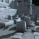
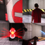
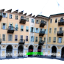
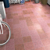
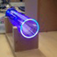
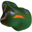
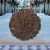
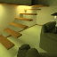

Curriculum vitæ
Curriculum vitæAssistant Professor at Utrecht University (Netherlands). My research interests include visual perception, computer graphics, and virtual reality.
I obtained my Ph.D. in Computer Science at the University of Leuven (Belgium). I've held postdoctoral positions at REVES / Inria Sophia-Antipolis (France), Giessen University (Germany), MPI Informatik (Germany), and Bangor University (UK), and I was a Senior Lecturer at Edge Hill University (UK).
Contact me to discuss topics or if you have any questions. More information...
, 2020
An empirical analysis of source code metrics and smart contract resource consumption
Journal of Software: Evolution and Process 32, 10
, 2020
Associating facial expressions and upper-body gestures with learning tasks for enhancing intelligent tutoring systems
International Journal of Artificial Intelligence in Education 30
, 2018
A Composite BRDF Model for Hazy Gloss
EGSR 2018
, 2017
The Perception of Hazy Gloss
Journal of Vision 17, 5
 , 2016
, 2016
Objective and Subjective Evaluation of High Dynamic Range Video Compression
Signal Processing: Image Communication 47
, 2015
A Model of Local Adaptation
ACM SIGGRAPH Asia 2015
, 2014
Stereo Day-for-Night: Retargeting Disparity for Scotopic Vision
ACM TAP 11, 3 (SAP 2014)
 , 2013
, 2013
Perception of Perspective Distortions in Image-Based Rendering
ACM SIGGRAPH 2013
, 2012
Walking in a Cube: Novel Metaphors for Safely Navigating Large Virtual Environments in Restricted Real Workspaces
IEEE VR 2012
, 2011
Perception of Visual Artifacts in Image-Based Rendering of Façades
EGSR 2011
, 2010
A Dynamic Noise Primitive for Coherent Stylization
EGSR 2010
, 2010
Procedural Isotropic Stochastic Textures by Example
Computers & Graphics 34, 4
, 2007
The Influence of Shape on the Perception of Material Reflectance
ACM SIGGRAPH 2007
, 2021
A framework for implementing gamification in Purchasing and Supply Management education
IPSERA Annual Meeting 2021
, 2020
TaggedICP: An Iterative Closest Point algorithm with metadata knowledge for improved matching of 3D protein structures
IMVIP 2020
, 2020
Opportunities for gamified learning in Purchasing and Supply Management education
ECGBL 2020
, 2018
Virtual Reality: A literature review and metrics-based classification
CGVC 2018
, 2014
Depth from HDR: Depth Induction or Increased Realism?
ACM SAP 2014
, 2011
A Multimode Immersive Conceptual Design System for Architectural Modeling and Lighting
Tech note, IEEE 3DUI 2011
, 2008
Shape-Dependent Gloss Correction
APGV 2008
, 2016
Specular Kurtosis and the Perception of Hazy Gloss
Oral presentation, VSS 2016
, 2015
An Empirical Model for Local Luminance Adaptation in the Fovea
Oral presentation, ECVP 2015
, 2015
Towards a High Resolution Grip Measurement Device for Orthopaedics
Research Demonstration, IEEE VR 2015
, 2012
Glossiness of Layered Materials
Poster, VSS 2012
, 2010
NPR Gabor Noise for Coherent Stylization
Talk, ACM SIGGRAPH 2010
, 2009
Human Visual Perception of Materials in Realistic Computer Graphics
Ph.D. thesis, K.U.Leuven
, 2009
Visual Equivalence in Dynamic Scenes
Technical Report CW 557
, 2009
Isotropic Stochastic Procedural Textures by Example
Technical Report CW 546
, 2006
A Perceptual Heuristic for Shadow Computation in Photo-Realistic Images
Sketch, ACM SIGGRAPH 2006
, 2005
Multispectral Rendering
Master's thesis, K.U.Leuven